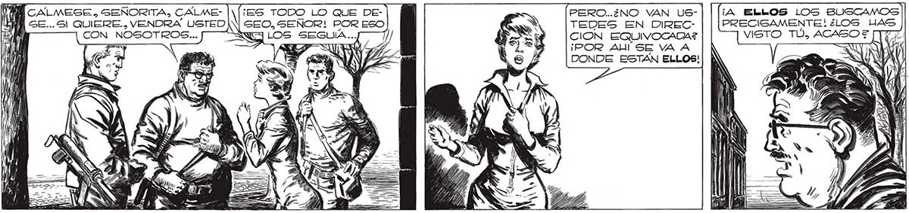

PERO..¿NO VAN US- ¡A ELb05 LOS Buscamos! 253 TEDES EN DirmaCc> PRECIGAMENTE ¿LOS HAS CION EQUIVOCGADAZ VISTO TÚ, ACASO E [177 ¡POR AI SE VA A DONDE ESTÁN ELLOS! WN CALMEGE, SEÑORITA, CALME- |1[1ES TODO LO QUE DEÍA SE... 51 QUIERE, VENDRÁ USTEDIN| SEO, SEÑOR! POR ESO y NOSOTROS... TÉXW LOS SEGUIA... AHORA LE EXPLICO... ¡UN LUGAR QUE PUEDE SER ANIQUILADO CON UNA SOLA GRANADA! UN LUGAR A POCAS CUADRAS DE AQUÍ... A ELLOS EXACTAMENTE NO, SENOR... PERO Sl AL PUESTO DE MANDO, AL LUGAR DONDE SE REÚNEN... | ¿USTED MISMA LOS VIO 7 ¿0D ALGUIEN SE LO CONTO? MZ a VISA S 1 L ) ; h : ' ..TENÍAMOS TODO BIEN CERRADO. PEDRO SE DIO CUENTA DE LO QUE PASABA. Y GRACIAS A ÉL NOS SALVAMOS. POR LA VENTANA LOS VIMOS LLEGAR... QUIEN LOS VIO ENTRAR FUE PEDRO, MI HERMANO.. NUESTRA CASA DA SOBRE LA PLAZA : POR CAGUALIDAD, CUANDO EMPEZO LA NEVADA... ¿COMO SABE QUE ELLOS ESTAN DENYO GÉ EL LUGAR DONDE ESTAN, ALLI, EN LA PLAZA CONGRESO CONSTRUYE RON UNA ESPECIE DE CÚPULA TRASLÚCIDA...RODEADA PH E DE ANTENAS RARISIMAS... E===72 .— ES —= AAA == —=Ñ AREA LI
